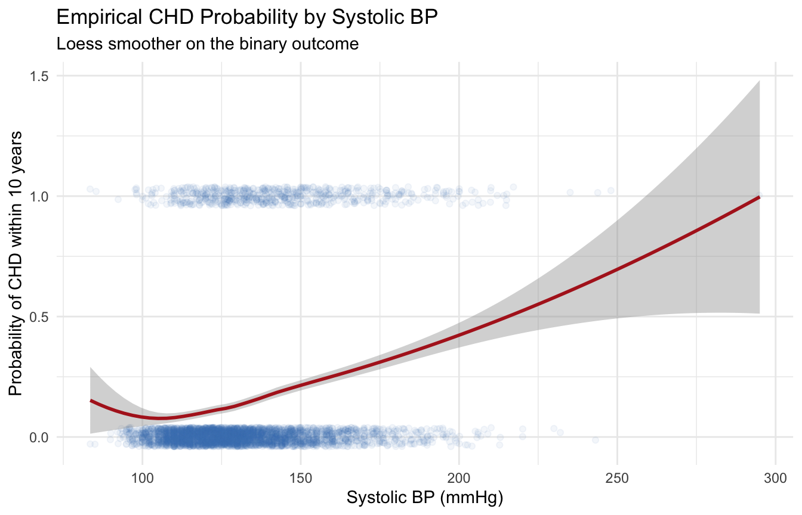

library(tidyverse)
library(this.path)
setwd(this.dir())
framingham <- read_csv("../../data/framingham.csv") |>
mutate(
male = factor(male, levels = c(0,1), labels = c("Female","Male")),
currentSmoker = factor(currentSmoker, levels = c(0,1), labels = c("Non-smoker","Smoker")),
prevalentHyp = factor(prevalentHyp, levels = c(0,1), labels = c("No","Yes")),
diabetes = factor(diabetes, levels = c(0,1), labels = c("No","Yes")),
TenYearCHD = factor(TenYearCHD, levels = c(0,1), labels = c("No","Yes")),
education = factor(education, levels = 1:4,
labels = c("Some HS","HS Diploma","Some College","College Degree"))
)Day 8: Logistic Regression
SC INBRE Biostatistics Summer Intensive 2026
1 Overview
So far we have modeled continuous outcomes with linear regression. Many of the most important questions in biomedical research, however, involve binary outcomes: did the patient develop the disease, did the screening test return positive, did the treatment succeed?
Today we extend regression to binary outcomes using logistic regression:
- Example 1: Simple logistic regression of
TenYearCHDonsysBP. Fitting, interpretation, and visualization. - Example 2: Multiple logistic regression with several risk factors. Adjusted odds ratios, model comparison, and selection.
Tomorrow we will take the predicted probabilities from these models and ask: how do we turn them into yes/no decisions, and how do we evaluate whether those decisions are any good?
2 Why Not Linear Regression?
Suppose we want to predict whether a Framingham participant will develop coronary heart disease (CHD) within 10 years, coded as 0 (no) or 1 (yes). Why can we not just run lm(TenYearCHD ~ age)?
Three problems show up immediately:
The line goes outside \([0, 1]\). A straight line has no upper or lower bound. At extreme ages, linear regression will predict probabilities below 0 or above 1, which is nonsense.
The variance is not constant. For a binary outcome, \(\text{Var}(Y) = \pi(1 - \pi)\) depends on \(\pi\). Homoscedasticity (the “E” in LINE) fails by construction.
The residuals cannot be normal. \(Y\) only takes the values 0 and 1, so residuals are bimodal. The normality assumption (“N” in LINE) fails too.
Logistic regression solves all three by modeling a transformation of the probability instead of the probability itself.
2.1 The Logit Transformation
Let \(\pi = P(Y = 1)\). The logit (log-odds) of \(\pi\) is
\[\text{logit}(\pi) = \log\!\left(\frac{\pi}{1-\pi}\right)\]
The logistic regression model assumes the log-odds is linear in the predictors:
\[\log\!\left(\frac{\pi}{1-\pi}\right) = \beta_0 + \beta_1 X_1 + \cdots + \beta_p X_p\]
Solving for \(\pi\) gives the familiar S-shaped curve:
\[\pi = \frac{\exp(\beta_0 + \beta_1 X_1 + \cdots + \beta_p X_p)}{1 + \exp(\beta_0 + \beta_1 X_1 + \cdots + \beta_p X_p)}\]
This curve is bounded between 0 and 1 for any values of the predictors. Problem solved.
3 Example 1: Simple Logistic Regression (CHD on sysBP)
3.1 The Question
Does systolic blood pressure predict whether a participant develops CHD within 10 years?
framingham |>
count(TenYearCHD) |>
mutate(percent = round(n / sum(n) * 100, 1))# A tibble: 2 × 3
TenYearCHD n percent
<fct> <int> <dbl>
1 No 3596 84.8
2 Yes 644 15.2About 15% of Framingham participants developed CHD over the follow-up. This is the baseline rate, the probability we would predict for a randomly chosen person if we had no other information.
3.2 Checking Variable Form
Before fitting, we look at how the empirical probability of CHD changes with sysBP. A loess smoother on the binary outcome gives a non-parametric estimate of \(\pi\) as a function of sysBP.
framingham |>
mutate(CHD_numeric = as.numeric(TenYearCHD) - 1) |>
ggplot(aes(x = sysBP, y = CHD_numeric)) +
geom_jitter(alpha = 0.06, height = 0.04, color = "steelblue") +
geom_smooth(method = "loess", color = "firebrick", se = TRUE, linewidth = 1) +
labs(x = "Systolic BP (mmHg)",
y = "Probability of CHD within 10 years",
title = "Empirical CHD Probability by Systolic BP",
subtitle = "Loess smoother on the binary outcome") +
theme_minimal()
The loess curve rises steadily with sysBP, suggesting that higher blood pressure is associated with higher CHD risk. The relationship looks reasonably smooth, with no sharp bends, so a single linear term on the log-odds scale is plausible.
3.3 Fitting the Model
We fit logistic regression with glm(). Note three changes compared to lm():
- The function is
glm()instead oflm(). - We specify
family = binomial(link = "logit")(or justfamily = binomial, since logit is the default). - The output is on the log-odds scale.
chd_simple <- glm(TenYearCHD ~ sysBP,
data = framingham,
family = binomial(link = "logit"))
summary(chd_simple)
Call:
glm(formula = TenYearCHD ~ sysBP, family = binomial(link = "logit"),
data = framingham)
Coefficients:
Estimate Std. Error z value Pr(>|z|)
(Intercept) -5.000050 0.255855 -19.54 <2e-16 ***
sysBP 0.024057 0.001801 13.36 <2e-16 ***
---
Signif. codes: 0 '***' 0.001 '**' 0.01 '*' 0.05 '.' 0.1 ' ' 1
(Dispersion parameter for binomial family taken to be 1)
Null deviance: 3612.2 on 4239 degrees of freedom
Residual deviance: 3433.3 on 4238 degrees of freedom
AIC: 3437.3
Number of Fisher Scoring iterations: 4Reading the output:
- Intercept (\(\hat\beta_0\) = -5): The log-odds of CHD when
sysBP = 0. Not directly meaningful because nobody has zero blood pressure, but it sets the level of the line. - sysBP (\(\hat\beta_1\) = 0.0241): For each additional 1 mmHg of systolic BP, the log-odds of CHD increase by 0.0241.
- z-value and p-value: Same role as the t-test in linear regression. Strong evidence that
sysBPis associated with CHD risk.
The log-odds scale is hard to interpret. Exponentiating converts it to odds ratios, which most people find easier.
3.4 Odds Ratios and Confidence Intervals
round(exp(cbind(OR = coef(chd_simple), confint(chd_simple))), 3) OR 2.5 % 97.5 %
(Intercept) 0.007 0.004 0.011
sysBP 1.024 1.021 1.028A 1 mmHg increase is a trivial change clinically. To make this more interpretable, rescale to a 20 mmHg increase (roughly one standard deviation):
exp(20 * coef(chd_simple)["sysBP"]) sysBP
1.617931 exp(20 * confint(chd_simple)["sysBP", ]) 2.5 % 97.5 %
1.50800 1.73679 A 20 mmHg increase in systolic BP roughly doubles the odds of developing CHD over 10 years. That number is much more interpretable.
Important
Always rescale the OR to a unit that means something. Reporting “OR = 1.02 per mmHg” is technically correct but conveys almost nothing. Reporting “OR = 2.05 per 20 mmHg” conveys the actual size of the effect.
3.5 Predicted Probabilities
predict() returns the linear predictor (log-odds) by default. Add type = "response" to get probabilities.
new_subjects <- tibble(sysBP = c(110, 130, 150, 180))
new_subjects |>
mutate(p_chd = predict(chd_simple, newdata = new_subjects, type = "response"))# A tibble: 4 × 2
sysBP p_chd
<dbl> <dbl>
1 110 0.0868
2 130 0.133
3 150 0.199
4 180 0.339 At sysBP = 110, the predicted CHD probability is about 8%. At sysBP = 180, it climbs to about 28%.
3.6 Visualizing the Fitted Curve
framingham |>
mutate(CHD_numeric = as.numeric(TenYearCHD) - 1) |>
ggplot(aes(x = sysBP, y = CHD_numeric)) +
geom_jitter(alpha = 0.06, height = 0.04, color = "steelblue") +
geom_smooth(method = "glm", method.args = list(family = "binomial"),
color = "firebrick", se = TRUE, linewidth = 1) +
labs(x = "Systolic BP (mmHg)",
y = "Probability of CHD within 10 years",
title = "Fitted Logistic Regression Curve",
subtitle = "Red curve: fitted logistic model; shaded band is 95% CI for the mean") +
theme_minimal()3.7 A Note on Categorizing Continuous Predictors
The same warning we issued for linear regression applies here. Categorization throws away information, reduces statistical power, and assumes a step change at the cutpoint.
framingham_bad <- framingham |>
mutate(sysBP_factor = cut(sysBP,
breaks = c(80, 120, 140, 160, 300),
labels = c("<120", "120-140", "140-160", "160+"),
include.lowest = TRUE))
bad_model <- glm(TenYearCHD ~ sysBP_factor,
data = framingham_bad,
family = binomial)
AIC(chd_simple, bad_model) df AIC
chd_simple 2 3437.314
bad_model 4 3460.491The continuous model has a lower AIC. Keep continuous variables continuous unless there is a strong reason to categorize.
4 Example 2: Adjusting for Confounders
4.1 The Question
From Example 1, we know that higher systolic BP is associated with higher CHD risk. But what about age? We saw in the Day 8 PM lab that age is a strong predictor of CHD on its own. The question we really want to answer is:
What is the effect of age on 10-year CHD risk, after removing the influence of other risk factors that are tangled up with age?
This is a question about confounding. A confounder is a variable that is related to both the exposure of interest (age) and the outcome (CHD). If we do not adjust for confounders, our estimate of the age effect may be biased, absorbing effects that actually belong to other variables.
4.4 Step 3: The Unadjusted Age Effect
Before adjusting, record the unadjusted OR for age so we can compare.
vars_used <- c("TenYearCHD", "age", "currentSmoker", "sysBP",
"totChol", "diabetes", "BMI")
framingham_cc <- framingham |>
drop_na(all_of(vars_used))
nrow(framingham) - nrow(framingham_cc)[1] 68chd_age_only <- glm(TenYearCHD ~ age,
data = framingham_cc,
family = binomial)
round(exp(cbind(OR = coef(chd_age_only), confint(chd_age_only))), 3) OR 2.5 % 97.5 %
(Intercept) 0.003 0.002 0.006
age 1.079 1.068 1.091The unadjusted OR for age is about 1.07 per year, or roughly 2.15 per decade.
4.5 Step 4: The Adjusted Model
Now we add the confounders identified above. The adjusted OR for age tells us how much age matters after removing the influence of blood pressure, cholesterol, smoking, diabetes, and BMI.
chd_adjusted <- glm(
formula = TenYearCHD ~ age + currentSmoker + sysBP + totChol + diabetes + BMI,
data = framingham_cc,
family = binomial
)4.6 Adjusted Odds Ratios
round(exp(cbind(OR = coef(chd_adjusted), confint(chd_adjusted))),3) OR 2.5 % 97.5 %
(Intercept) 0.000 0.000 0.001
age 1.068 1.055 1.081
currentSmokerSmoker 1.740 1.443 2.102
sysBP 1.016 1.012 1.020
totChol 1.001 0.999 1.003
diabetesYes 2.069 1.328 3.176
BMI 1.014 0.992 1.0374.7 Comparing the Unadjusted and Adjusted Age Effects
tibble(
Model = c("Unadjusted", "Adjusted"),
OR_age = c(exp(coef(chd_age_only)["age"]),
exp(coef(chd_adjusted)["age"])),
CI_lower = c(exp(confint(chd_age_only)["age", 1]),
exp(confint(chd_adjusted)["age", 1])),
CI_upper = c(exp(confint(chd_age_only)["age", 2]),
exp(confint(chd_adjusted)["age", 2]))
) # A tibble: 2 × 4
Model OR_age CI_lower CI_upper
<chr> <dbl> <dbl> <dbl>
1 Unadjusted 1.08 1.07 1.09
2 Adjusted 1.07 1.06 1.08The adjusted OR for age is smaller than the unadjusted OR. This tells us that part of the apparent age effect was actually driven by confounders: older people have higher blood pressure, higher cholesterol, and more diabetes. Once we hold those factors constant, the direct association between age and CHD is weaker, though still substantial.
This is the central lesson of multivariable regression: the unadjusted estimate mixes together the effect of age with the effects of everything correlated with age. The adjusted estimate isolates the piece attributable to age itself, to the extent that we have measured and included the relevant confounders.
Important
Confounding can go in either direction. Here, the adjusted OR was smaller than the unadjusted one (positive confounding: the confounders inflated the apparent effect of age). In other settings, confounders can mask a true effect, making the unadjusted OR smaller than the adjusted one (negative confounding). The direction depends on the specific relationships in your data.
4.8 Interpreting the Full Set of Adjusted ORs
Even though our primary interest is the age effect, the adjusted ORs for the other variables are also interpretable:
- currentSmokerSmoker: About 50% higher odds of CHD than non-smokers of the same age, BP, cholesterol, BMI, and diabetes status.
- sysBP: Per 20 mmHg, the adjusted OR is 1.37.
- totChol: Per 40 mg/dL, the adjusted OR is 1.05.
- diabetesYes: Substantially higher CHD odds even after adjusting for everything else.
- BMI: The CI includes 1. As expected from our confounder assessment, BMI does not add much once the other variables are accounted for.
4.9 Does BMI Belong in the Model?
We suspected BMI would not be a meaningful confounder. We can test this formally by comparing the model with and without it.
chd_no_bmi <- glm(TenYearCHD ~ age + currentSmoker + sysBP + totChol + diabetes,
data = framingham_cc,
family = binomial)
anova(chd_no_bmi, chd_adjusted, test = "LRT")Analysis of Deviance Table
Model 1: TenYearCHD ~ age + currentSmoker + sysBP + totChol + diabetes
Model 2: TenYearCHD ~ age + currentSmoker + sysBP + totChol + diabetes +
BMI
Resid. Df Resid. Dev Df Deviance Pr(>Chi)
1 4166 3194.9
2 4165 3193.2 1 1.6037 0.2054If the LRT p-value is large, BMI does not significantly improve the model. More importantly, check whether dropping BMI changes the age OR:
tibble(
Model = c("With BMI", "Without BMI"),
OR_age = c(exp(coef(chd_adjusted)["age"]),
exp(coef(chd_no_bmi)["age"]))
)# A tibble: 2 × 2
Model OR_age
<chr> <dbl>
1 With BMI 1.07
2 Without BMI 1.07If the age OR barely changes, BMI is not confounding the age-CHD relationship and can be dropped without concern.
4.10 Final Model and Its Odds Ratios
chd_final <- chd_no_bmi
round(exp(cbind(OR = coef(chd_final), confint(chd_final))),3) OR 2.5 % 97.5 %
(Intercept) 0.000 0.000 0.001
age 1.067 1.055 1.080
currentSmokerSmoker 1.712 1.422 2.064
sysBP 1.016 1.012 1.020
totChol 1.001 0.999 1.003
diabetesYes 2.114 1.359 3.239This is the table you would report in a paper. The age OR, adjusted for the identified confounders, is the headline result. The confounders’ ORs provide supporting context.
5 Summary
Three key skills from today:
Fit and interpret. Use
glm()withfamily = binomial. Report exponentiated coefficients (odds ratios), rescaled to clinically meaningful units, with confidence intervals.Compare and select models. Use
anova(reduced, full, test = "LRT")for nested model tests. UseAIC()orstep()for exploratory selection.Predicted probabilities. Use
predict(model, type = "response")to get \(\hat\pi\) for each observation or for new individuals.
Tomorrow we will take these predicted probabilities and evaluate their classification performance: turning them into yes/no decisions, building confusion matrices, and summarizing the tradeoff with ROC curves and AUC.